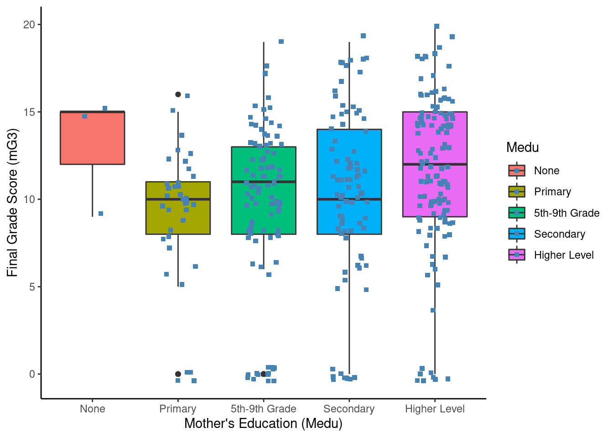
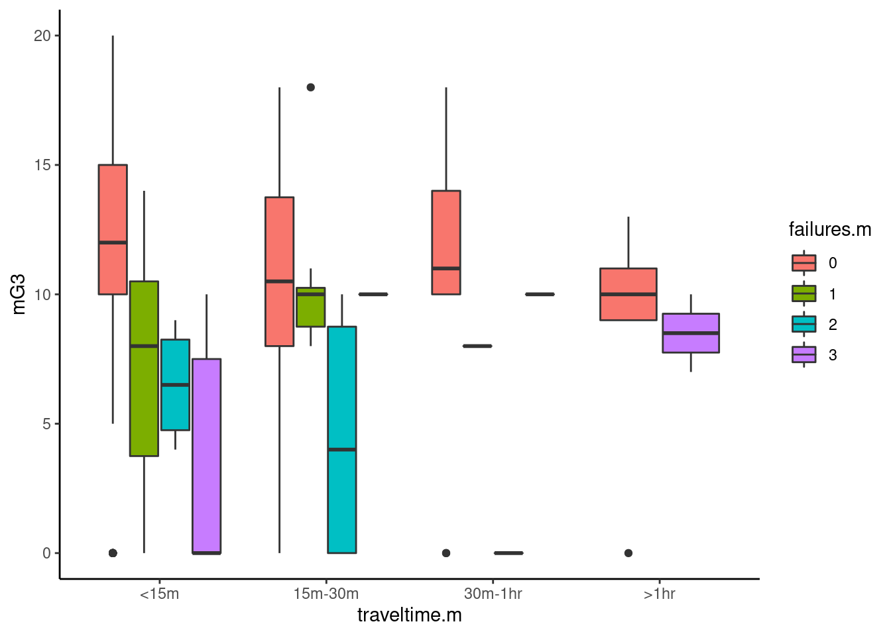
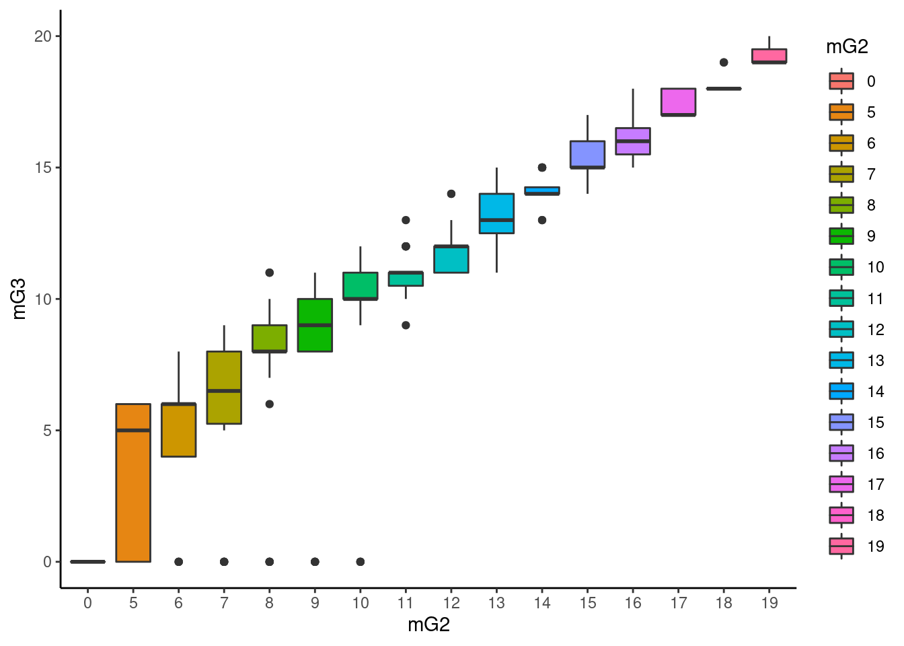

In this section we tried to investigate, through data exploration, if a subset of attributes related to motivation and time away from school work affected a math student’s final grade. In a first attempt at data exploration we had selected 14 variables of interest for math students during data description. Variables such as in a romantic relationship and alcohol intake were reviewed. Tests such as the T-test and Anova were conducted but nothing of strong statistical significance (p<0.05) was detected that supported our research questions. In this iteration we used the following variables to try investigate different attributes related to motivation and focus away from schoolwork play a role in final grade performance.
The following are our selected variables of interest.
## school age failures.m romantic.m traveltime.m
## GP:342 Min. :15.00 Min. :0.0000 no :237 Min. :1.000
## 1st Qu.:16.00 1st Qu.:0.0000 yes:105 1st Qu.:1.000
## Median :16.00 Median :0.0000 Median :1.000
## Mean :16.44 Mean :0.2895 Mean :1.383
## 3rd Qu.:17.00 3rd Qu.:0.0000 3rd Qu.:2.000
## Max. :22.00 Max. :3.0000 Max. :4.000
## goout.m Fedu Medu higher.m mG1
## Min. :1.000 Min. :0.000 Min. :0.000 no : 16 Min. : 3.0
## 1st Qu.:2.000 1st Qu.:2.000 1st Qu.:2.000 yes:326 1st Qu.: 8.0
## Median :3.000 Median :3.000 Median :3.000 Median :10.5
## Mean :3.123 Mean :2.594 Mean :2.854 Mean :10.9
## 3rd Qu.:4.000 3rd Qu.:4.000 3rd Qu.:4.000 3rd Qu.:13.0
## Max. :5.000 Max. :4.000 Max. :4.000 Max. :19.0
## mG2 mG3
## Min. : 0.00 Min. : 0.00
## 1st Qu.: 9.00 1st Qu.: 8.00
## Median :11.00 Median :11.00
## Mean :10.79 Mean :10.49
## 3rd Qu.:13.00 3rd Qu.:14.00
## Max. :19.00 Max. :20.00The purpose of this test was to see if those who said yes to wanting to pursue higher education, got better grades than those that do not. We wanted to test hypothesis that motivation affects final grade performance because we want to know, what levels indicate, in a subset of attributes, that a student requires early intervention before exam failure? It also helps us understand if we should include this attribute in our model to predict which students will fail their exams, if so what is the level of accuracy.
We will use a two sampled paired t-test if we find a difference in standard deviation between higher.m and mG3 that is greater than 2 standard deviations. We will deem this a non-parametric test and use a Wilcoxon’s rank sum test instead. We are comparing ‘higher.m’ which is a nominal categorical variable with level of grade scored 0-20, numerical variable. This is similar to the pearson’s test we did in the previous section.
We state our hypothesis along with the null hypothesis: h0: higher.m_mu <= mG3_mu h1: higher.m_mu > mG3_mu
If Levene’s p-value was less than 0.05 we would deem variance equal and require a parametric test such as Student’s T-test. p-value was greater than 0.05 so we deemed it not normally distributed and required a non-parametric test such as Wilcoxon’s rank sum test. We compared the mean of two attributes from the same group (math students) making this a paired test. R perform a wilcoxon signed rank test of the null that the distribution of x is symmetric about mu. We fed a parameter to test that the x (mG3) was less than y (higher.m)
##
## Wilcoxon rank sum test with continuity correction
##
## data: mG3 by higher.m
## W = 876.5, p-value = 3.383e-06
## alternative hypothesis: true location shift is less than 0A statistical significant difference was found so we can reject the null hypothesis. We can say with a 95% confidence level that math students who want to pursue a higher education are more likely to get better grades.
We wanted to know if a student’s motivation to go onto higher education influenced their final grades. We found after performing a Wilcoxon’s Rank Sum Test (Levene’s Test p = 0.231) there there was a statistically significant difference (mu_no=6.9, mu_yes=10.8; SD_no=2.9, SD_yes=3.7) of p<0.05 (1.602e-05) so we rejected the null hypothesis. We can say with a 95% confidence level that math students, who want to pursue a higher education may get a better final grade. Our cohen’s d values are greater than 0.05 so we conclude that there is a large effect to the statistical significance of our Wilcoxon’s test. It seems higher.m is a good indicator.
The purpose of this test was to see if being in a relationship affects a students math grade. Here we wanted to know if time away from school work (i.e spending it with a partner) was influencing final grade score.
We used a two sampled paired t-test to find if the difference in standard deviation between the two was less than 2 standard deviations. If greater than 2 standard deviations we deemed this a non-parametric test and used a Wilcoxon’s rank sum test instead. We were comparing ‘relationship’ which is a nominal categorical variable with level of grade level, a numeric variable.
We state our hypothesis: h0: relationship_mu <= mG3_mu h1: relationship_mu > mG3_mu
##
## Wilcoxon rank sum test with continuity correction
##
## data: mG3 by romantic.m
## W = 14266, p-value = 0.985
## alternative hypothesis: true location shift is less than 0We chose a one way Anova because we were testing against different groups from the same school. We assumed that students from GT school were randomly sampled from a normally distributed population.
We stated our parameters and hypothesis below: * school: GT (all students are from the same school) * age group: 15, 16 and 17 * mG3: maths grade performance H0: The means between age groups are identical Ha: At least, the mean of one age group is different
## [1] "None" "Primary" "5th-9th Grade" "Secondary"
## [5] "Higher Level"
## [1] "One Way ANOVA:"## Df Sum Sq Mean Sq F value Pr(>F)
## Medu 4 293 73.28 3.434 0.00907 **
## Residuals 337 7192 21.34
## ---
## Signif. codes: 0 '***' 0.001 '**' 0.01 '*' 0.05 '.' 0.1 ' ' 1We could not tell which mean within the Medu group was different so we used Tukey as the post-hoc test option as group variances were the same. If they were not we would have used Games-Howell.
## [1] "Tukey:"## Tukey multiple comparisons of means
## 95% family-wise confidence level
##
## Fit: aov(formula = mG3 ~ Medu, data = smath)
##
## $Medu
## diff lwr upr p adj
## Primary-None -3.8648649 -11.47079455 3.741065 0.6321948
## 5th-9th Grade-None -3.2717391 -10.70520003 4.161722 0.7472775
## Secondary-None -2.7647059 -10.20782631 4.678415 0.8466600
## Higher Level-None -1.4240000 -8.82641025 5.978410 0.9844945
## 5th-9th Grade-Primary 0.5931257 -1.87338994 3.059641 0.9647664
## Secondary-Primary 1.1001590 -1.39531698 3.595635 0.7461211
## Higher Level-Primary 2.4408649 0.06957067 4.812159 0.0401000
## Secondary-5th-9th Grade 0.5070332 -1.39916057 2.413227 0.9495352
## Higher Level-5th-9th Grade 1.8477391 0.10727633 3.588202 0.0311936
## Higher Level-Secondary 1.3407059 -0.44056094 3.121973 0.2381620Pr(>F) value is less than 0.05 for mother’s with a higher education vs primary education and mother’s education vs secondary education. There is a statistical difference between the age groups, specifically mothers with a higher education vs mothers with only a primary or secondary education (p-value adjusted 0.03 and 0.04). It seems a mother’s education is a good indicator for a math student’s final grade score.
 ### One-way ANOVA Test
## Df Sum Sq Mean Sq F value Pr(>F)
## traveltime.m 3 107 35.6 1.881 0.132
## failures.m 3 1041 346.9 18.336 4.87e-11 ***
## Residuals 335 6338 18.9
## ---
## Signif. codes: 0 '***' 0.001 '**' 0.01 '*' 0.05 '.' 0.1 ' ' 1## [1] "Tukey:"## Tukey multiple comparisons of means
## 95% family-wise confidence level
##
## Fit: aov(formula = mG3 ~ traveltime.m + failures.m, data = smath)
##
## $traveltime.m
## diff lwr upr p adj
## 15m-30m-<15m -1.0117359 -2.449050 0.4255778 0.2668772
## 30m-1hr-<15m -1.4124328 -4.500610 1.6757445 0.6393401
## >1hr-<15m -2.2695756 -6.576076 2.0369250 0.5249513
## 30m-1hr-15m-30m -0.4006969 -3.648350 2.8469560 0.9887988
## >1hr-15m-30m -1.2578397 -5.680097 3.1644173 0.8831973
## >1hr-30m-1hr -0.8571429 -6.055924 4.3416383 0.9740562
##
## $failures.m
## diff lwr upr p adj
## 1-0 -3.1374861 -5.326146 -0.9488266 0.0014254
## 2-0 -6.0702978 -9.520971 -2.6196249 0.0000459
## 3-0 -5.6952975 -8.580428 -2.8101675 0.0000034
## 2-1 -2.9328117 -6.909665 1.0440417 0.2282351
## 3-1 -2.5578114 -6.055267 0.9396440 0.2350096
## 3-2 0.3750002 -4.023762 4.7737624 0.9962305Pr(>F) values for travel time is less than 0.05 but not for failures. There is a statistical difference between failure group. Comparing 0 failures to those students with 1 or more seems to be statistically significant. One explanation although just conjector, could be that students with more failures develop gaps in their learning which takes time to fill, time of which could have been spent focusing on the final grade exam. We are not told how time is spent around Failures. Failures.m will be included as an attribute for our predictive model.
The purpose of this test is to see if those who said yes to wanting to pursue higher education, fail less than than those that do not. We are trying to support our hypothesis.
We will use a two sampled paired t-test if we find a difference in standard deviation between higher.m and failures.m that is greater than 2 standard deviations. We will deem this a non-parametric test and use a Wilcoxon’s rank sum test instead.
We state our hypothesis along with the null hypothesis: h0: higher.m_mu = failures.m_mu h1: higher.m_mu != failures.m_mu

We will test first grade and second grade scores separately against final grade. We also know these are normally distributed from our previous section.
## [1] "One Way ANOVA (mG1):"## Df Sum Sq Mean Sq F value Pr(>F)
## mG1 16 4827 301.66 36.87 <2e-16 ***
## Residuals 325 2659 8.18
## ---
## Signif. codes: 0 '***' 0.001 '**' 0.01 '*' 0.05 '.' 0.1 ' ' 1## [1] "One Way ANOVA (mG2):"## Df Sum Sq Mean Sq F value Pr(>F)
## mG2 15 6121 408.1 97.52 <2e-16 ***
## Residuals 326 1364 4.2
## ---
## Signif. codes: 0 '***' 0.001 '**' 0.01 '*' 0.05 '.' 0.1 ' ' 1Both mG1 and mG2 are statistically significant to mG3 (p=<2e-16). Past performance in exam work seem to be a good predictor of future performance.
#Conclusion We found strong significance with mother’s education (Medu), desire to persue higher education (higher.m), number of past failures (failures.m) and past exam performance (mG1, mG2) when compared to final grade (mG3). These seem to be the subset of attributes, that we should use when trying to determine if a student requires early intervention before exam failure.